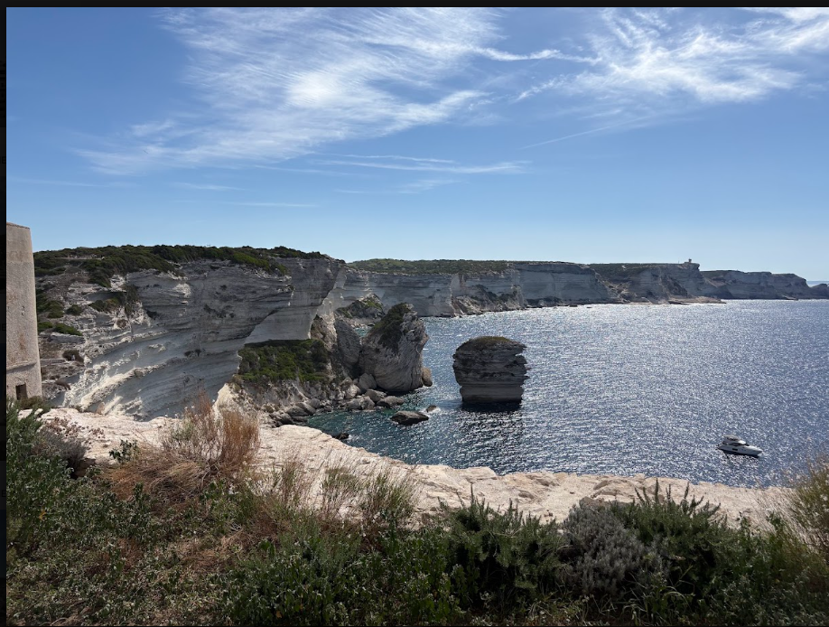

Törnbeschrieb
Woche 1: 4.–11. September 2027
Start und Ziel jeweils Olbia/Portisco. Das Schiff läuft direkt im Anschluss eine zweite Woche (11.–18. September) mit neuer Crew — der Tagesplan unten zeigt die erste Woche im Detail und lässt sich durchblättern.
Tag 1 — Samstag
Wir treffen uns am Nachmittag im Hafen von Olbia/Portisco, so zwischen 14 und 16 Uhr. Während der Schiffübernahme wird der Einkauf erledigt und danach geht es bei einem gemeinsamen Abendessen in Hafennähe entspannt los — mit sardischen Spezialitäten und einem guten Glas Wein zur Vorfreude auf die Woche.
Tag 2 — Sonntag
Nach einem Frühstück entweder im Hafen oder noch auf dem Schiff schauen wir uns die Grundlagen an Bord an — auch als Segelanfänger könnt ihr überall mit anpacken. Danach legen wir ab in Richtung La Maddalena Archipel, ankert in einer der schönsten Badebuchten und macht den Abend über in Cala Gavetta fest.
Tag 3 — Montag
Weiter geht's Richtung Nordküste Sardiniens: Im nördlichsten Hafen der Insel, Santa Teresa di Gallura, legen wir für einen Landgang an. Ein kurzer Spaziergang hinauf in den Ort belohnt mit Aussicht über Plätze, Strassencafés und kleine Geschäfte.
Tag 4 — Dienstag
Wir segeln weiter Richtung Korsika. Wir sind auf der Überfahrt nach Korsika und legen am Liegeplatz im Hafen von Bonifacio an. Die steilen Gassen der Altstadt führen vorbei an mittelalterlicher Architektur und einem Hauch Seefahrer-Flair — abends geniessen wir französische Lebensart bei gutem Essen.

Tag 5 — Mittwoch
Ein Tag ganz für malerische Buchten und Badespass: Wir segeln zu den Lavezzi-Inseln vor der Südspitze Korsikas — eine Gruppe aus rund hundert kleinen, meist aus Granit bestehenden Inseln und Riffen, die etwas herb, aber faszinierend wirkt.
Tag 6 — Donnerstag
Direkt vor dem korsischen Naturhafen Porto Vecchio ist nochmals baden angesagt, bevor es zurück Richtung Sardinien geht. Zum Übernachten laufen wir eine der zahlreichen Buchten an der Nordostküste an — bekannt für Strände und Ortschaften im typisch sardischen Stil.
Tag 7 — Freitag
Am letzten vollen Tag an Bord ist Relaxen, Sonnenbaden und etwas Funsegeln angesagt. Am Nachmittag, meist zwischen 15 und 18 Uhr, sind wir wieder in Olbia/Portisco.
Tag 8 — Samstag
Noch schnell Kontakte austauschen, die letzten Sachen packen — gegen 9 Uhr endet der Törn mit dem Ausschiffen. Einig seid ihr euch: Von Insel zu Insel zu segeln ist die schönste Art, Sardinien und Korsika kennenzulernen.